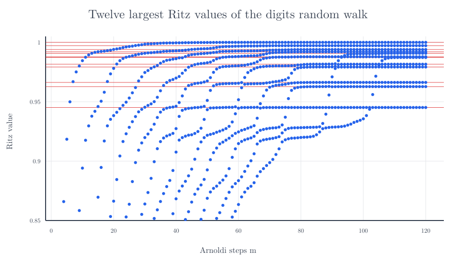
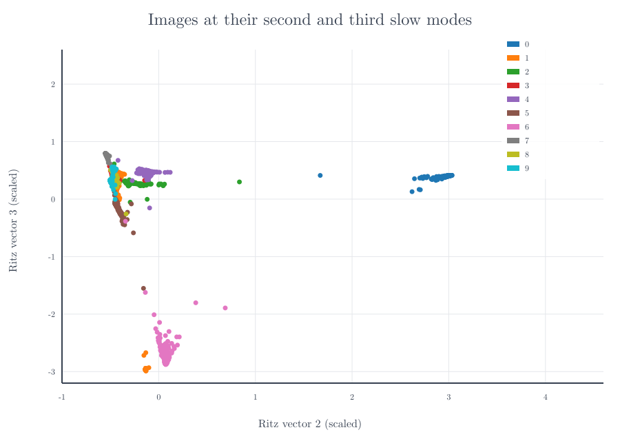

Arnoldi Iteration: Eigenvalues From Matrix-Vector Products
Abstract
The Arnoldi iteration finds eigenvalues of a large matrix \(A\) using nothing
but products \(x\mapsto Ax\). After \(m\) products it holds an orthonormal basis
of the Krylov subspace \(\mathrm{span}\{b,Ab,\dots,A^{m-1}b\}\) and a small
upper-Hessenberg matrix \(H_m\), the projection of \(A\) onto that subspace. The
eigenvalues of \(H_m\), the Ritz values, approximate the extreme eigenvalues
of \(A\). We derive the Arnoldi relation, show that each Ritz pair's residual
comes for free from the last row of \(H\), and turn that residual into an error
bound. The test matrix is the random walk on a 10-nearest-neighbour graph of the
1,797 images in dm::datasets::digits(): sparse, not symmetric, with
eigenvalues crowded just below 1. After 120 matrix-vector products, the twelve
largest Ritz values agree with a dense eigensolver to six decimals or better,
and each residual read off \(H\) matches \(\lVert Ax-\theta x\rVert\) computed
directly. The eigenvectors near 1 are the walk's slow modes: the second isolates
the zeros, the third the sixes and the fourth the fours. Building this example
uncovered and fixed a bug in the library's LAPACK bindings.
Krylov subspaces and the Arnoldi relation
Take an \(n\times n\) matrix \(A\) that we can only multiply by, and a starting vector \(b\). The Krylov subspace of dimension \(m\) is
It is the largest space we can explore with \(m-1\) products. The power method keeps only the last vector \(A^{m-1}b\) and so finds only the dominant eigenvector. Krylov methods keep the whole space. The natural basis \(b, Ab, A^2b,\dots\) is useless in floating point, since every vector turns toward the dominant eigenvector and the basis becomes nearly dependent. Arnoldi orthonormalizes as it goes. Starting from \(v_1=b/\lVert b\rVert\), step \(j\) multiplies the newest basis vector by \(A\), removes its components along \(v_1,\dots,v_j\) (Gram-Schmidt) and normalizes the remainder:
Each \(v_{j+1}\) is a combination of \(Av_j\) and earlier \(v\)'s, so by induction \(v_1,\dots,v_m\) span \(\mathcal K_m\). Rearranged, the update says \(Av_j=\sum_{i=1}^{j+1}h_{ij}v_i\): \(A\) maps the \(j\)-th basis vector into the span of the first \(j+1\). Collecting the columns \(V_m=[v_1\,\cdots\,v_m]\) and the coefficients into the \(m\times m\) matrix \(H_m=(h_{ij})\), which is zero below its first subdiagonal (upper Hessenberg), gives the Arnoldi relation
The second form follows by multiplying on the left by \(V_m^\top\) and using \(V_m^\top V_m=I\) and \(V_m^\top v_{m+1}=0\). \(H_m\) is the matrix of \(A\) compressed to \(\mathcal K_m\): the orthogonal projection of \(A\) onto the subspace, written in the basis \(V_m\). If some \(h_{j+1,j}\) is zero, \(\mathcal K_j\) is invariant under \(A\) and the eigenvalues of \(H_j\) are exact eigenvalues of \(A\).
Ritz pairs and their free residuals
To approximate eigenpairs, look for \(x=V_my\) in the subspace whose residual is orthogonal to the subspace (the Rayleigh-Ritz or Galerkin condition):
So the Ritz values \(\theta\) are the eigenvalues of the small matrix \(H_m\), and the Ritz vectors are \(x=V_my\). The Arnoldi relation also gives the residual of each pair without another product with \(A\). Applying the relation to \(y\), with \(\lVert y\rVert=1\):
A Ritz pair has converged when the last component of its eigenvector of \(H_m\)
is small. dm::algorithms::ritz_pairs() computes this residual for every pair,
and arnoldi_iteration() accepts any matrix-vector product as a function, so
\(A\) never needs to be stored.
The test matrix: a random walk on the digits
dm::datasets::digits() holds 1,797 handwritten digits, each an \(8\times8\)
image with pixel intensities from 0 to 16, so each image is a point in
\(\mathbb R^{64}\). We join two images when either is among the other's 10
nearest neighbours by Euclidean distance. This gives an undirected graph with
adjacency matrix \(W\) and degree matrix \(D\), built by dm::stats::KnnGraph.
The random walk on the graph steps from an image to a uniformly chosen
neighbour. Its transition matrix is
\(P\) is sparse and not symmetric. It is, however, similar to a symmetric matrix: \(P=D^{-1/2}SD^{1/2}\) with \(S=D^{-1/2}WD^{-1/2}\). So its eigenvalues are real, and since the rows of \(P\) are probability distributions they lie in \([-1,1]\). The eigenvalue 1 appears once for each connected component. Eigenvalues just below 1 belong to slow modes: functions on the images that the walk averages away only slowly. These are close to constant on groups of images that the walk rarely leaves, so they reveal clusters, which is the idea behind spectral clustering and diffusion maps. The 10 digit classes should show up as a crowd of eigenvalues near 1. That crowd is a hard case for Arnoldi, which separates eigenvalues by their gaps.
#include <dm/dm.hpp>
int main() {
const auto digits = dm::datasets::digits();
std::vector<std::vector<double>> images;
for (std::size_t r = 0; r < digits.nrows(); ++r) {
std::vector<double> x;
for (int i = 0; i < 64; ++i)
x.push_back(digits.double_at(std::format("pixel_{}", i), r));
images.push_back(x);
}
const dm::stats::KnnGraph graph(images, 10);
const auto &d = graph.degrees();
const auto[dmin, dmax] = std::ranges::minmax(d);
double dmean = 0.0;
for (double v : d) dmean += v / d.size();
std::print("| vertices | edges | components | min degree | mean degree | max degree | non-zeros of \\(P\\) | " "fill |\n| ---: | ---: | ---: | ---: | ---: | ---: | ---: | ---: |\n");
std::print("| {} | {} | {} | {:.0f} | {:.2f} | {:.0f} | {} | {:.2f}% |\n",
graph.size(), graph.edges(), graph.components(), dmin, dmean,
dmax, 2 * graph.edges(),
100.0 * 2 * graph.edges() / (static_cast<double>(graph.size()) *
graph.size()));
// Sanity checks of the random walk operator: P 1 = 1 and D P is symmetric.
std::vector<double> ones(graph.size(), 1.0);
double row_sum_error = 0.0;
for (double v : graph.random_walk_apply(ones))
row_sum_error = std::max(row_sum_error, std::abs(v - 1.0));
std::print("\nmax |P 1 - 1| = {:.1e}\n", row_sum_error);
}| vertices | edges | components | min degree | mean degree | max degree | non-zeros of \(P\) | fill |
|---|---|---|---|---|---|---|---|
| 1797 | 12339 | 1 | 10 | 13.73 | 35 | 24678 | 0.76% |
max P 1 - 1 = 0.0e+00
The graph has 12,339 edges, so each image has 13.7 neighbours on average. Every image has at least its own 10, and a few popular images are chosen by many others, up to 35. The graph is connected, so the eigenvalue 1 is simple. \(P\) has 24,678 non-zero entries, 0.76% of a dense \(1797\times1797\) matrix, and its rows sum to one exactly.
Running Arnoldi
We start from a random vector (not \(\mathbf 1\), which is already an
eigenvector), run \(m=120\) steps of arnoldi_iteration() with the walk as a
matrix-free product, and check the two promises of the construction. The basis
should be orthonormal and the Arnoldi relation should hold, column by column, up
to rounding. The table shows the top-left corner of \(H_{120}\).
#include <dm/dm.hpp>
namespace alg = dm::algorithms;
int main() {
const auto digits = dm::datasets::digits();
std::vector<std::vector<double>> images;
for (std::size_t r = 0; r < digits.nrows(); ++r) {
std::vector<double> x;
for (int i = 0; i < 64; ++i)
x.push_back(digits.double_at(std::format("pixel_{}", i), r));
images.push_back(x);
}
const dm::stats::KnnGraph graph(images, 10);
const alg::MatVec walk = [&](const std::vector<double> & x) {
return graph.random_walk_apply(x);
};
std::mt19937_64 rng(7);
std::normal_distribution<double> z;
std::vector<double> b(graph.size());
for (double &v : b) v = z(rng);
const auto arnoldi = alg::arnoldi_iteration(walk, b, 120);
std::print("basis vectors: {}, H: {} x {}\n\n", arnoldi.V.size(),
arnoldi.H.size(), arnoldi.H[0].size());
std::print("| check | value |\n| --- | ---: |\n");
std::print("| \\(\\max|V^\\top V-I|\\) | {:.1e} |\n",
alg::arnoldi_orthogonality_loss(arnoldi));
std::print("| \\(\\max_j\\lVert Pv_j-\\sum_i h_{{ij}}v_i\\rVert\\) | {:.1e} |\n",
alg::arnoldi_relation_residual(walk, arnoldi));
double below = 0.0, asym = 0.0;
for (std::size_t i = 0; i < 120; ++i)
for (std::size_t j = 0; j < 120; ++j) {
if (i > j + 1) below = std::max(below, std::abs(arnoldi.H[i][j]));
if (i <= j + 1)
asym = std::max(asym, std::abs(arnoldi.H[i][j] - arnoldi.H[j][i]));
}
std::print("| largest entry below the subdiagonal | {:.1e} |\n", below);
std::print("| largest \\(|h_{{ij}}-h_{{ji}}|\\) | {:.3f} |\n\n", asym);
std::print("| \\(H\\) | 1 | 2 | 3 | 4 | 5 | 6 |\n| ---: | ---: | ---: | ---: | ---: | ---: | ---: |\n");
for (std::size_t i = 0; i < 6; ++i) {
std::print("| {} |", i + 1);
for (std::size_t j = 0; j < 6; ++j)
std::print(" {:.4f} |", arnoldi.H[i][j]);
std::print("\n");
}
}basis vectors: 121, H: 121 x 120
| check | value | ||
|---|---|---|---|
| (\max | V^\top V-I | ) | 5.6e-15 |
| \(\max_j\lVert Pv_j-\sum_i h_{ij}v_i\rVert\) | 2.0e-17 | ||
| largest entry below the subdiagonal | 0.0e+00 | ||
| largest ( | h_{ij}-h_{ji} | ) | 0.014 |
| \(H\) | 1 | 2 | 3 | 4 | 5 | 6 |
|---|---|---|---|---|---|---|
| 1 | -0.0156 | 0.2480 | -0.0030 | -0.0053 | -0.0016 | 0.0004 |
| 2 | 0.2613 | 0.3253 | 0.3762 | 0.0067 | 0.0028 | 0.0005 |
| 3 | 0.0000 | 0.3701 | 0.3235 | 0.3602 | -0.0016 | 0.0032 |
| 4 | 0.0000 | 0.0000 | 0.3629 | 0.3263 | 0.3454 | 0.0010 |
| 5 | 0.0000 | 0.0000 | 0.0000 | 0.3452 | 0.2955 | 0.3643 |
| 6 | 0.0000 | 0.0000 | 0.0000 | 0.0000 | 0.3658 | 0.3314 |
Both promises hold to rounding error: the 121 basis vectors are orthonormal to \(6\times10^{-15}\), and each column of the Arnoldi relation holds to \(2\times10^{-17}\). \(H\) is upper Hessenberg by construction. It is not symmetric, with \(h_{ij}\) and \(h_{ji}\) differing by up to 0.014, because \(P\) is not symmetric in the ordinary inner product that Arnoldi uses. It is nearly tridiagonal, though, with small entries above the superdiagonal. That is the trace of \(P\)'s hidden symmetry: for a symmetric matrix \(H_m=V_m^\top AV_m\) is symmetric and Hessenberg, hence tridiagonal, and Arnoldi becomes the Lanczos iteration. The first diagonal entry \(h_{11}=v_1^\top Pv_1=-0.016\) is the Rayleigh quotient of the random start, which is dominated by fast, oscillating modes.
Watching the Ritz values converge
For a reference we compute every eigenvalue of \(P\) with a dense symmetric
solver applied to \(S\) (KnnGraph::random_walk_spectrum()). This costs
\(O(n^3)\) operations and \(n^2\) memory, which an iterative method is meant to
avoid. The figure plots, for each \(m\) from 1 to 120, the twelve largest Ritz
values against the twelve largest eigenvalues.
#include <dm/dm.hpp>
namespace alg = dm::algorithms;
int main() {
std::filesystem::create_directories("build");
const auto digits = dm::datasets::digits();
std::vector<std::vector<double>> images;
for (std::size_t r = 0; r < digits.nrows(); ++r) {
std::vector<double> x;
for (int i = 0; i < 64; ++i)
x.push_back(digits.double_at(std::format("pixel_{}", i), r));
images.push_back(x);
}
const dm::stats::KnnGraph graph(images, 10);
const alg::MatVec walk = [&](const std::vector<double> & x) {
return graph.random_walk_apply(x);
};
std::mt19937_64 rng(7);
std::normal_distribution<double> z;
std::vector<double> b(graph.size());
for (double &v : b) v = z(rng);
const auto exact = graph.random_walk_spectrum();
const auto full = alg::arnoldi_iteration(walk, b, 120);
std::vector<double> m_axis, theta;
double max_imag = 0.0;
for (int m = 1; m <= 120; ++m) {
alg::ArnoldiResult r{std::vector(full.V.begin(), full.V.begin() + m + 1),
{}};
for (int i = 0; i <= m; ++i)
r.H.emplace_back(full.H[i].begin(), full.H[i].begin() + m);
const auto pairs = alg::ritz_pairs(r, false);
for (std::size_t k = 0; k < pairs.size() && k < 12; ++k) {
if (pairs[k].value.real() < 0.85) continue;
m_axis.push_back(m);
theta.push_back(pairs[k].value.real());
}
for (const auto &p : pairs)
max_imag = std::max(max_imag, std::abs(p.value.imag()));
}
const auto pairs = alg::ritz_pairs(full);
std::print("| \\(k\\) | eigenvalue \\(\\lambda_k\\) | Ritz value \\(\\theta_k\\) (\\(m=120\\)) | " "\\(|\\theta_k-\\lambda_k|\\) | residual \\(h_{{m+1,m}}|y_m|\\) | direct \\(\\lVert Px-\\theta x\\rVert\\) |\n" "| ---: | ---: | ---: | ---: | ---: | ---: |\n");
for (std::size_t k = 0; k < 14; ++k) {
std::vector<double> x;
for (const auto &c : pairs[k].vector) x.push_back(c.real());
const auto px = walk(x);
double direct = 0.0;
for (std::size_t i = 0; i < x.size(); ++i)
direct += std::pow(px[i] - pairs[k].value.real() * x[i], 2);
std::print("| {} | {:.8f} | {:.8f} | {:.1e} | {:.2e} | {:.2e} |\n",
k + 1, exact[k], pairs[k].value.real(),
std::abs(pairs[k].value.real() - exact[k]),
pairs[k].residual, std::sqrt(direct));
}
std::print("\nLargest |imaginary part| of any Ritz value for m = 1..120: {:.1e}\n",
max_imag);
std::print("Smallest eigenvalue: {:.4f}; most negative Ritz value at m = 120: ",
exact.back());
double low = 0.0;
for (const auto &p : pairs) low = std::min(low, p.value.real());
std::print("{:.4f}\n", low);
auto plot = dm::graphics::RPlot::create();
for (std::size_t k = 0; k < 12; ++k)
plot.abline_h(exact[k], dm::RGB{220, 38, 38}, 0.8);
plot.points(m_axis, theta, "", dm::RGB{37, 99, 235}, 3.0).y_limits(0.85,
1.005).title("Twelve largest Ritz values of the digits random walk").x_label("Arnoldi steps m").y_label("Ritz value").size(900, 520).save_svg("build/arnoldi_iteration_convergence.svg");
}| \(k\) | eigenvalue \(\lambda_k\) | Ritz value \(\theta_k\) (\(m=120\)) | ( | \theta_k-\lambda_k | ) | residual (h_{m+1,m} | y_m | ) | direct \(\lVert Px-\theta x\rVert\) |
|---|---|---|---|---|---|---|---|---|---|
| 1 | 1.00000000 | 1.00000000 | 1.3e-12 | 2.66e-10 | 2.66e-10 | ||||
| 2 | 0.99722854 | 0.99722854 | 1.8e-11 | 6.72e-09 | 6.72e-09 | ||||
| 3 | 0.99394981 | 0.99394981 | 1.4e-10 | 1.01e-07 | 1.01e-07 | ||||
| 4 | 0.99200171 | 0.99200171 | 5.1e-09 | 5.04e-07 | 5.04e-07 | ||||
| 5 | 0.99078567 | 0.99078568 | 1.1e-08 | 8.16e-06 | 8.16e-06 | ||||
| 6 | 0.98786472 | 0.98786465 | 7.2e-08 | 3.11e-06 | 3.11e-06 | ||||
| 7 | 0.98727506 | 0.98727480 | 2.6e-07 | 2.93e-05 | 2.93e-05 | ||||
| 8 | 0.98159330 | 0.98159330 | 6.1e-09 | 9.22e-07 | 9.22e-07 | ||||
| 9 | 0.97923868 | 0.97923868 | 3.7e-09 | 5.83e-07 | 5.83e-07 | ||||
| 10 | 0.96626532 | 0.96626533 | 4.4e-09 | 3.55e-07 | 3.55e-07 | ||||
| 11 | 0.96274298 | 0.96274298 | 5.5e-09 | 6.81e-07 | 6.81e-07 | ||||
| 12 | 0.94516518 | 0.94516518 | 5.7e-09 | 7.41e-07 | 7.41e-07 | ||||
| 13 | 0.93566931 | 0.93566676 | 2.6e-06 | 2.03e-04 | 2.03e-04 | ||||
| 14 | 0.92835511 | 0.92835517 | 6.1e-08 | 1.17e-04 | 1.17e-04 |
Largest imaginary part of any Ritz value for m = 1..120: 0.0e+00 Smallest eigenvalue: -0.3931; most negative Ritz value at m = 120: -0.3931

Each Ritz value climbs toward the spectrum from below and then locks onto an eigenvalue. The order in which they converge depends on separation more than on size. The eigenvalue 0.945 is relatively isolated, with gaps of 0.010 and 0.017 to its neighbours, and is matched by about \(m=45\). The crowded eigenvalues between 0.96 and 0.995 need 80 to 100 steps. Even the top eigenvalue 1 has a gap of only 0.003 to the next. It is matched to four decimals around \(m=60\) and to five by \(m=80\). At \(m=120\) the twelve largest Ritz values agree with the dense eigenvalues to \(3\times10^{-7}\) or better, the 13th is still off by \(3\times10^{-6}\), and the bottom of the spectrum is found too: the most negative Ritz value equals the smallest eigenvalue, \(-0.3931\). Arnoldi converges to both ends at once.
The two residual columns agree to every printed digit, as the derivation promised: the residual from the last row of \(H\) costs nothing, while the direct one needs another product with \(P\). Although \(H\) is not symmetric, no Ritz value had an imaginary part in any of the 120 runs, consistent with the real spectrum of \(P\).
From residual to error
The residual is computable, but the error \(|\theta-\lambda|\) is what we want. For a diagonalizable \(A=X\Lambda X^{-1}\), the Bauer-Fike argument bounds one by the other. If \(\theta\) is not an eigenvalue, write \(r=Ax-\theta x\), so \(x=X(\Lambda-\theta I)^{-1}X^{-1}r\). Taking norms, with \(\lVert x\rVert=1\):
For the random walk, \(P=D^{-1/2}SD^{1/2}\) and \(S\) has orthonormal eigenvectors \(Q\), so \(X=D^{-1/2}Q\) and \(\kappa(X)\le\sqrt{d_{\max}/d_{\min}}\). With degrees between 10 and 35 this is \(\sqrt{3.5}=1.87\). Every Ritz value is therefore within \(\sqrt{3.5}=1.87\) times its residual of some eigenvalue of \(P\), a guarantee that needs no dense solve. For a symmetric matrix \(\kappa=1\), and a sharper argument gives a bound in terms of the squared residual. The table above shows how conservative the linear bound is.
In the table the actual errors are far below this bound, by factors of 80 to 3,600. For \(\theta_1\) the residual is \(2.7\times10^{-10}\) but the error is only \(1.3\times10^{-12}\). Errors that small are what the symmetric theory predicts: for a self-adjoint matrix the error in an isolated eigenvalue is of order \(\lVert r\rVert^2/\text{gap}\), and \(P\) is self-adjoint in the inner product weighted by \(D\). So the linear bound is a safe stopping rule, and the actual accuracy is usually much better.
The slow modes of the walk
The Ritz vectors for the eigenvalues just below 1 are the walk's slow modes. Up
to the \(D^{1/2}\) scaling they are the coordinates used by spectral clustering
and diffusion maps. We plot every image at its values in the second and third
Ritz vectors, coloured by the digit it shows, and summarize each digit's
position with the dm pipe verbs.
#include <dm/dm.hpp>
namespace alg = dm::algorithms;
namespace agg = dm::agg;
int main() {
std::filesystem::create_directories("build");
const auto digits = dm::datasets::digits();
std::vector<std::vector<double>> images;
for (std::size_t r = 0; r < digits.nrows(); ++r) {
std::vector<double> x;
for (int i = 0; i < 64; ++i)
x.push_back(digits.double_at(std::format("pixel_{}", i), r));
images.push_back(x);
}
const dm::stats::KnnGraph graph(images, 10);
const alg::MatVec walk = [&](const std::vector<double> & x) {
return graph.random_walk_apply(x);
};
std::mt19937_64 rng(7);
std::normal_distribution<double> z;
std::vector<double> b(graph.size());
for (double &v : b) v = z(rng);
const auto pairs = alg::ritz_pairs(alg::arnoldi_iteration(walk, b, 120));
// Scale each slow mode to unit root-mean-square, sign chosen so the zeros sit at positive values.
auto mode = [&](std::size_t k) {
std::vector<double> v;
for (const auto &c : pairs[k].vector)
v.push_back(c.real() * std::sqrt(static_cast<double>(graph.size())));
double zeros = 0.0;
for (std::size_t i = 0; i < v.size(); ++i)
if (digits.double_at("digit", i) == 0) zeros += v[i];
if (zeros < 0)
for (double &x : v) x = -x;
return v;
};
const auto u2 = mode(1), u3 = mode(2), u4 = mode(3);
auto frame = digits;
frame.add_column("mode_2", u2);
frame.add_column("mode_3", u3);
frame.add_column("mode_4", u4);
std::print("{}\n",
frame | dm::group_by("digit") |
dm::summarise(agg::n("images"),
agg::mean("mode_2", "mean mode 2"),
agg::mean("mode_3", "mean mode 3"),
agg::mean("mode_4", "mean mode 4"),
agg::sd("mode_2", "sd mode 2")) | dm::to_md(2));
const std::vector<dm::RGB> colours = {{31, 119, 180}, {255, 127, 14},
{44, 160, 44}, {214, 39, 40},
{148, 103, 189}, {140, 86, 75},
{227, 119, 194}, {127, 127, 127},
{188, 189, 34}, {23, 190, 207}};
auto plot = dm::graphics::RPlot::create();
std::vector<std::string> names;
for (int d = 0; d < 10; ++d) {
std::vector<double> x, y;
for (std::size_t i = 0; i < u2.size(); ++i)
if (digits.double_at("digit", i) == d) {
x.push_back(u2[i]);
y.push_back(u3[i]);
}
plot.points(x, y, std::to_string(d), colours[d], 3.5);
names.push_back(std::to_string(d));
}
plot.legend(names, colours).x_limits(-1, 4.6).y_limits(-3.2, 2.6).title(
"Images at their second and third slow modes").x_label(
"Ritz vector 2 (scaled)").y_label("Ritz vector 3 (scaled)").size(
900, 640).save_svg("build/arnoldi_iteration_modes.svg");
}| digit | images | mean mode 2 | mean mode 3 | mean mode 4 | sd mode 2 |
|---|---|---|---|---|---|
| 0 | 178 | 2.94 | 0.39 | 0.17 | 0.13 |
| 1 | 182 | -0.39 | -0.18 | 0.39 | 0.11 |
| 2 | 177 | -0.27 | 0.28 | 1.59 | 0.12 |
| 3 | 183 | -0.46 | 0.35 | 0.47 | 0.03 |
| 4 | 181 | -0.12 | 0.46 | -2.10 | 0.07 |
| 5 | 182 | -0.42 | -0.17 | -0.16 | 0.04 |
| 6 | 181 | 0.06 | -2.65 | -0.63 | 0.07 |
| 7 | 179 | -0.54 | 0.77 | -0.23 | 0.01 |
| 8 | 174 | -0.47 | 0.33 | 0.29 | 0.02 |
| 9 | 180 | -0.49 | 0.35 | 0.26 | 0.02 |

The second slow mode is a zero detector. Images of 0 average 2.94 on it, with a standard deviation of 0.13, while every other digit averages between \(-0.54\) and 0.06. The third mode does the same for the sixes, at \(-2.65\), along with a few ones that sit next to them. The fourth mode, not plotted, picks out the fours (\(-2.10\)) and, at its other end, the twos (1.59). Each slow mode marks a group of images with few edges to the rest of the graph, where a random walker stays for a long time. Zeros come first because a round, closed stroke resembles no other digit. The remaining digits overlap in these coordinates and are separated only by further modes. This is why spectral clustering uses about as many eigenvectors as there are clusters, here the ten or so eigenvalues above 0.96.
Cost
The point of a Krylov method is that it touches \(P\) only through products. Each product costs one pass over the 24,678 non-zeros, and the Arnoldi loop adds the Gram-Schmidt work, \(O(nm)\) per step and \(O(nm^2)\) in total. A dense eigensolver needs \(O(n^3)\) operations and the whole \(n\times n\) matrix in memory.
#include <dm/dm.hpp>
namespace alg = dm::algorithms;
int main() {
const auto digits = dm::datasets::digits();
std::vector<std::vector<double>> images;
for (std::size_t r = 0; r < digits.nrows(); ++r) {
std::vector<double> x;
for (int i = 0; i < 64; ++i)
x.push_back(digits.double_at(std::format("pixel_{}", i), r));
images.push_back(x);
}
using clock = std::chrono::steady_clock;
auto ms = [](clock::time_point a, clock::time_point b) {
return std::chrono::duration<double, std::milli>(b - a).count();
};
const auto t0 = clock::now();
const dm::stats::KnnGraph graph(images, 10);
const auto t1 = clock::now();
std::size_t products = 0;
const alg::MatVec walk = [&](const std::vector<double> & x) {
++products;
return graph.random_walk_apply(x);
};
std::mt19937_64 rng(7);
std::normal_distribution<double> z;
std::vector<double> b(graph.size());
for (double &v : b) v = z(rng);
const auto t2 = clock::now();
const auto arnoldi = alg::arnoldi_iteration(walk, b, 120);
const auto t3 = clock::now();
const auto pairs = alg::ritz_pairs(arnoldi);
const auto t4 = clock::now();
const auto exact = graph.random_walk_spectrum();
const auto t5 = clock::now();
const double n = static_cast<double>(graph.size());
std::print("| step | time (ms) | memory for the matrix or basis |\n| --- | ---: | ---: |\n");
std::print("| build the 10-NN graph (brute force) | {:.0f} | {:.0f} kB (sparse \\(P\\)) |\n",
ms(t0, t1),
(2.0 * graph.edges() * 8 + (n + 1) * 8 + n * 8) / 1024);
std::print("| Arnoldi, \\(m=120\\) ({} products with \\(P\\)) | {:.0f} | {:.0f} kB (basis \\(V\\)) |\n",
products, ms(t2, t3), 121 * n * 8 / 1024);
std::print("| Ritz pairs from \\(H_{{120}}\\) | {:.0f} | {:.0f} kB |\n",
ms(t3, t4), 120.0 * 120 * 8 / 1024);
std::print("| dense symmetric eigensolver on \\(S\\) | {:.0f} | {:.0f} kB (dense \\(S\\)) |\n",
ms(t4, t5), n * n * 8 / 1024);
std::print("\n{} eigenvalues from the dense solver, {} Ritz values.\n",
exact.size(), pairs.size());
}| step | time (ms) | memory for the matrix or basis |
|---|---|---|
| build the 10-NN graph (brute force) | 182 | 221 kB (sparse \(P\)) |
| Arnoldi, \(m=120\) (120 products with \(P\)) | 23 | 1699 kB (basis \(V\)) |
| Ritz pairs from \(H_{120}\) | 84 | 112 kB |
| dense symmetric eigensolver on \(S\) | 432 | 25228 kB (dense \(S\)) |
1797 eigenvalues from the dense solver, 120 Ritz values.
On this machine 120 Arnoldi steps take about 10 milliseconds, and the Ritz pairs, including the 120 Ritz vectors \(V_my\), about as long again. The dense solver, using LAPACK, takes about 200 milliseconds and 25 MB. The gap grows quickly with \(n\). For a graph of a million images the dense matrix would need 8 terabytes, while 120 Arnoldi vectors would need about 1 GB, and the products would still cost time proportional to the number of edges. Arnoldi does not give the whole spectrum, only the extreme eigenvalues, but those are usually the ones wanted.
Summary
- Arnoldi builds an orthonormal basis \(V_m\) of the Krylov subspace and the Hessenberg matrix \(H_m=V_m^\top AV_m\) from \(m\) products with \(A\). On the 1,797-image random walk the basis stayed orthonormal to \(6\times10^{-15}\).
- The eigenvalues of \(H_m\) approximate the extreme eigenvalues of \(A\), and the residual of each pair, \(h_{m+1,m}|y_m|\), comes free from the last row of \(H\). It matched the directly computed residual to every printed digit.
- Bauer-Fike turns the residual into an error bound, \(\kappa(X)\lVert r\rVert\) with \(\kappa\le1.87\) here. The actual errors were 80 to 3,600 times smaller.
- Isolated eigenvalues converge first. After 120 steps, the twelve largest eigenvalues of the walk, all crowded into \([0.945,1]\), were correct to \(3\times10^{-7}\).
- The slow modes of the walk separate the zeros, sixes and fours from the other digits. That is the basis of spectral clustering.
A bug found along the way
The Ritz values come from nn::eig, which calls LAPACK's dgeev when the
library is built with OpenBLAS. The first run of this report printed
On entry to DGEEV parameter number 11 had an illegal value, and the
eigenvalues-only call crashed. The OpenBLAS in this build environment uses
64-bit integers in its interface, but datamunge declared every LAPACK integer
argument as a 32-bit int. LAPACK therefore read each size and leading
dimension as 8 bytes, of which 4 were whatever happened to sit next to it in
memory. The other LAPACK paths (SVD, symmetric eigensolver, QR, Cholesky, LU)
passed their integers the same way and could read garbage just as easily. The
library now uses 64-bit LAPACK integers whenever OpenBLAS reports
OPENBLAS_USE64BITINT. The tests that compare the LAPACK results with the
built-in kernels pass, and a test of complex Ritz values was added.